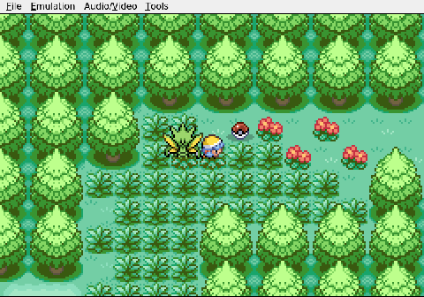
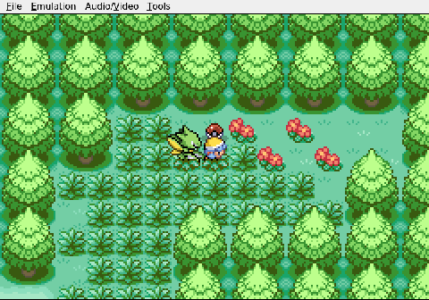
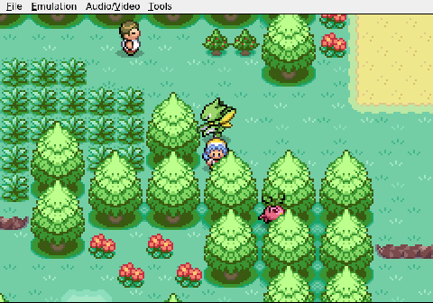
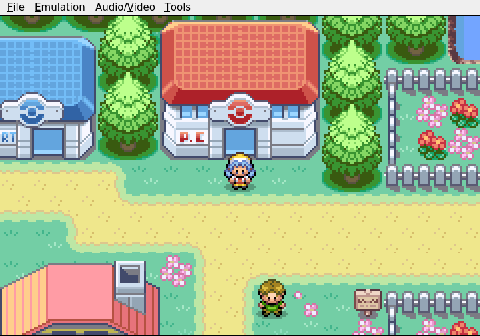
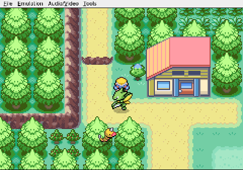

Gemini plays Pokemon Heart & Soul, Run 2
A City of Cherries and Mistakes
Gemini heads west from New Bark Town with Viper the Scyther as its only party member. The tall grass of Route 29 is a gauntlet of small decisions: fight this Pokémon, flee that one, keep Viper standing long enough to reach civilization. The AI picks its battles carefully, and the strategy works. Cherrygrove City appears on the horizon with its red rooftops and promises of a healing desk.

A local guide offers a walking tour. Gemini declines, preferring to poke around on its own. It finds a berry tree, chats up a resident, and pockets a Cheri Berry. Standard errands, competently handled.

Then Gemini walks into the Pokémon Center, turns around, and walks right back out. Viper is sitting at roughly half health. The nurse is standing right there. The AI simply leaves. No one can explain this. The navigational logic that carried Gemini safely through thirty patches of tall grass apparently short-circuits the moment it crosses the threshold of the one building that matters.

So Viper goes back into the grass at half health. A few more fights push her to Level 6, but her HP sinks to 12 out of 25. Gemini finally registers the danger and orders a retreat toward the Center it already visited and ignored.

The randomizer, naturally, is not going to make this easy. A wild Level 3 Chansey waddles into the path. In a normal run this would be a footnote. In a Nuzlocke, with a wounded Scyther and no other Pokémon on the roster, it is a genuine decision: fight for a massive experience payout or run for the healing desk a few steps away.

The session ends there, Gemini frozen mid-choice, Viper bleeding hit points, and a Chansey staring them both down.
